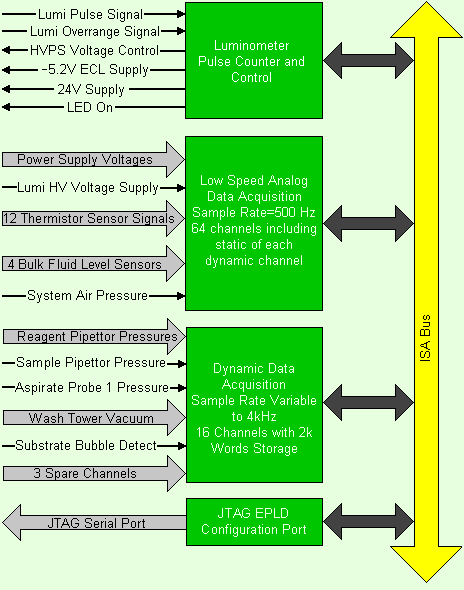
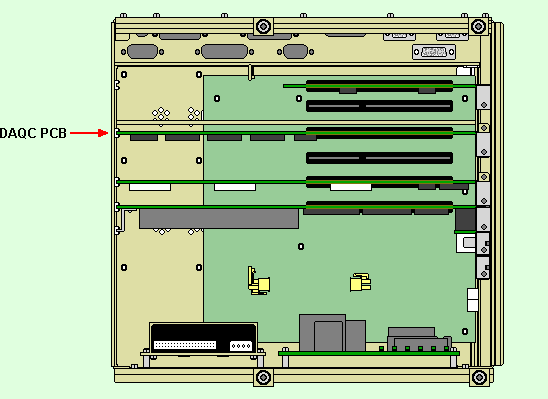

Data Acquisition PCB (DAQC) Operating Principles
This document details the operating principles for the DAQC PCB
PCB Function
Caution: The DAQC PCB supplies ±12 volts to the substrate bubble detector, lower cabinet interface, pressure interface, vacuum sensor interface, and buffer and waste fluids drawer interface PCBs. The PCB also provides power to the luminometer and LED reference. These devices, along with the CPU card cage, do not lose power when the covers are opened.
The data acquisition and control PCB (DAQC) PCB performs these functions:
- Data acquisition luminometer (pulse counting).
- Controls luminometer high-voltage power supply.
- Controls LED reference.
- Powers luminometer and LED reference.
- Monitors power supply voltages.
- Receives temperature inputs (twelve thermistors).
- Receives bulk fluid level inputs (two waste, two buffer).
- Receives system air pressure input.
- Receives fluid pressure inputs (six).
- Receives system vacuum sensor inputs (six).
- Receives substrate bubble detector input.

PCB Location

Note: The DxI 600 and DxI 800 instruments use the same DAQC PCB located in the same position.
Operational Overview
- The DAQC PCB provides an interface for instrument:
- Analog measurements.
- Digital measurements.
- Analog control.
- Digital control.
- The DAQC PCB logic is based on a RAM-based EPLD device. This provides the ability to load new logic into the PCB during development and into the final product through the JTAG standard test access port.
- All devices on this PCB are accessed and controlled via direct I/O from the host processor over the ISA bus.
- The DAQC PCB supplies ±12 volts to the substrate bubble detector, lower cabinet interface, pressure interface, vacuum sensor interface, and buffer and waste fluids drawer interface PCBs. It also provides power to the luminometer and LED reference.
Component Locations
Specific information regarding the components for this PCB is not provided. Service personnel are advised not to change or repair any PCB unless directed to do so by STS Chaska.
PCB Features and Functions
| Component | Function and Description |
|---|---|
| Luminometer Interface | The luminometer interface includes:
|
| Temperature Measurement | Thermistors provide twelve inputs to DAQC PCB:
Note:
|
| Static Pressure Measurement |
|
| Dynamic Pressure Measurement | Dynamic pressure measurement is used for obstruction detection pressure measurement. Repetitive measurements at high rates (0.1 to 4000 Hz) throughout a pump cycle are required with the raw data stored in a buffer for analysis by the CPU. |
| Power Supply Voltage Measurement | The measured power supply voltages are:
|
| Static Bulk Fluid Weight Measurement | Buffer fluid and waste fluid levels are measured by weighing the bottles or boxes using analog hall effect sensors. The DAQC PCB converts these analog voltages to digital values. |
Interacting Devices
The data acquisition and control PCB interacts with these devices:
- CPU backplane
- Luminometer
- LED reference
- Thermistors
- Fluid level weight sensors
- Air pressure sensor
- Reagent and sample pipettor pressure sensors
- Aspirate probe 1 pressure sensor
- Vacuum pump pressure sensors
- Substrate bubble detector